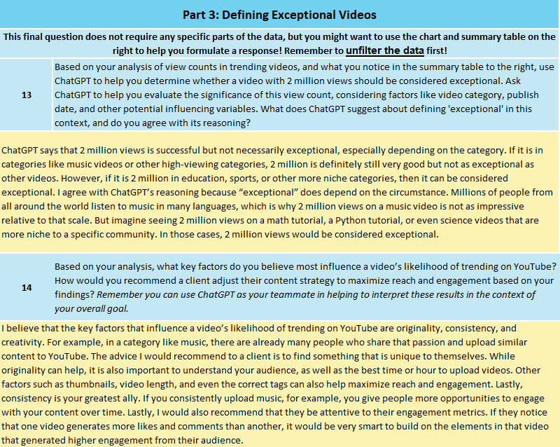
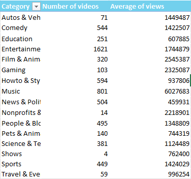
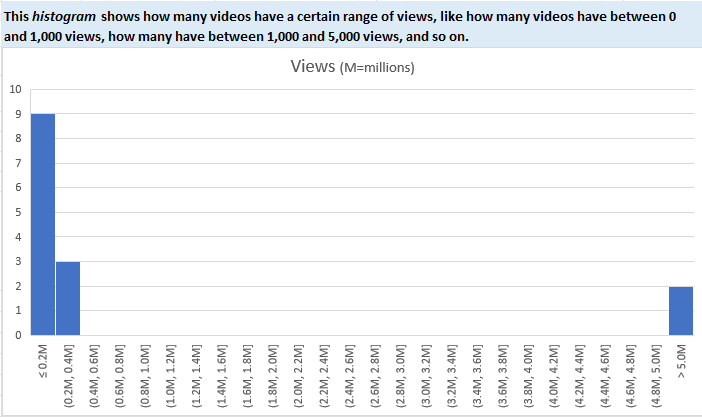

Problem
With thousands of videos competing for attention on YouTube, performance can vary significantly depending on content category and audience behavior. The goal of this project was to analyze trending video data and determine what factors may help explain high-performing videos.
Analysis
I analyzed over 6,000 trending YouTube videos in Excel using summary statistics, PivotTables, and data visualizations. I compared the number of videos and average views across content categories and examined the distribution of video views to determine what could be considered exceptional performance.
Findings
Video performance varied substantially across content categories, meaning that the same view count does not necessarily represent the same level of performance for every type of video. Categories with larger audiences generally produced higher average view counts, while reaching similar numbers in smaller categories represented stronger relative performance.
Recommendation
Content creators should evaluate performance within the context of their specific category rather than relying on a single view threshold. Creators should also monitor engagement metrics and identify characteristics of their strongest-performing videos to help guide future content decisions.
Project Screenshots
The screenshots below show the analysis, visualizations, and conclusions developed throughout the project.
Project Files: The screenshots shown below provide an overview of the work completed for this project. If you are interested in reviewing the complete project file or discussing the analysis in greater detail, please contact me and I would be happy to provide access.


